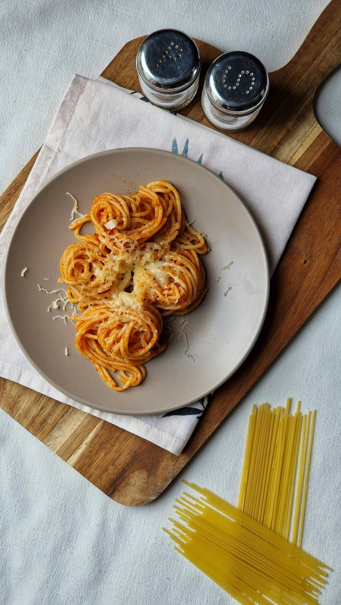

Spaghetti

Description:
Spaghetti is a beloved Italian dish made with long, thin pasta strands. It’s often paired with a savory tomato sauce, garlic, herbs, and sometimes meatballs. The dish is simple yet comforting, offering a balance of tangy sauce and tender pasta.
Ingredients:
- 200g spaghetti
- 2 tbsp olive oil
- 2 cloves garlic, minced
- 400g canned tomatoes
- 1 tsp dried oregano
- Salt and pepper to taste
- Fresh basil leaves
- Grated Parmesan cheese
- Optional: Meatballs or cooked ground beef
Steps
- Boil water in a large pot, add salt, and cook spaghetti until al dente.
- Heat olive oil in a pan, sauté garlic until fragrant.
- Add tomatoes, oregano, salt, and pepper; simmer for 10 to 15 minutes.
- Drain spaghetti and toss with the sauce.
- Garnish with basil and Parmesan before serving.
And thus we have a delicious and easy-to-make spaghetti dish!
Home